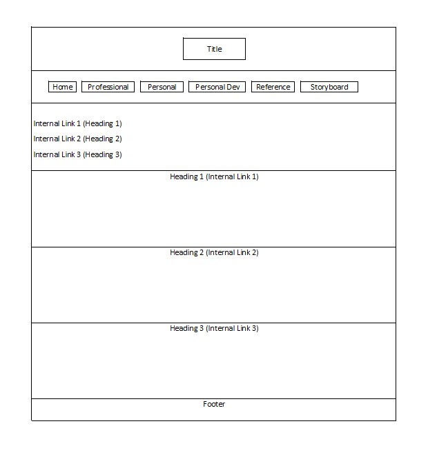
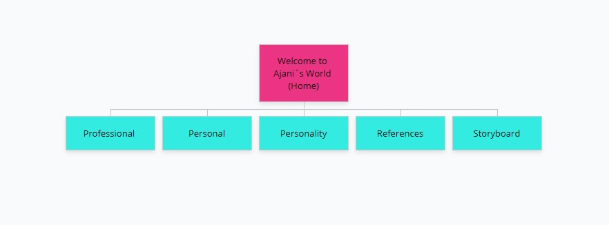

Welcome to Ajani`s World™ Home Professional Personal Personal Development Reference Storyboard Storyboard Site Map Purpose of Each Page Theme and Target Audience Storyboard 
Site Map 
Purpose of Each Page
Home/Splash Page: This is the webpage that introduces the user to my website.Professional Page: This webpage gives the user information about my goals, my experiences and the skill I pertain.Personal Page: This page allows the user to feel as if they know the person behind the screen and allows me to show them my character.Personal Development: This page showcases my strengths and weaknesses and it also contains a reflection based on a book I read.Reference Page: This page includes links to the sites that aided me in completing this assignment.Storyboard Page: This page contains the wireframe and sitemap of the website.
Theme and Target Audience The theme of this website was inspired based on my favorite colors; it felt as if it fit the situation since the website was about me. The target audience for my website is:
The General Public
Employers